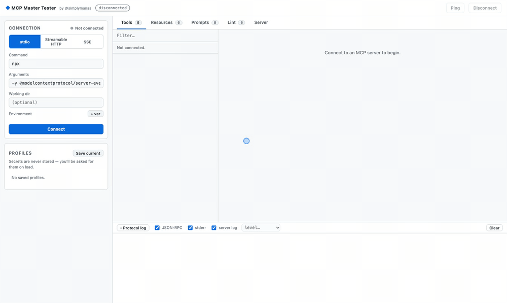
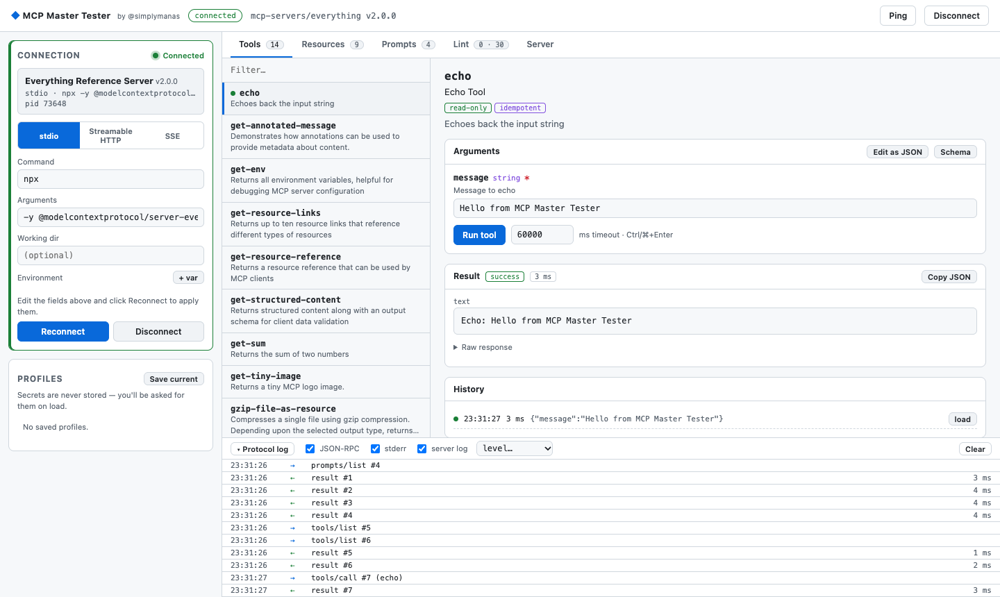
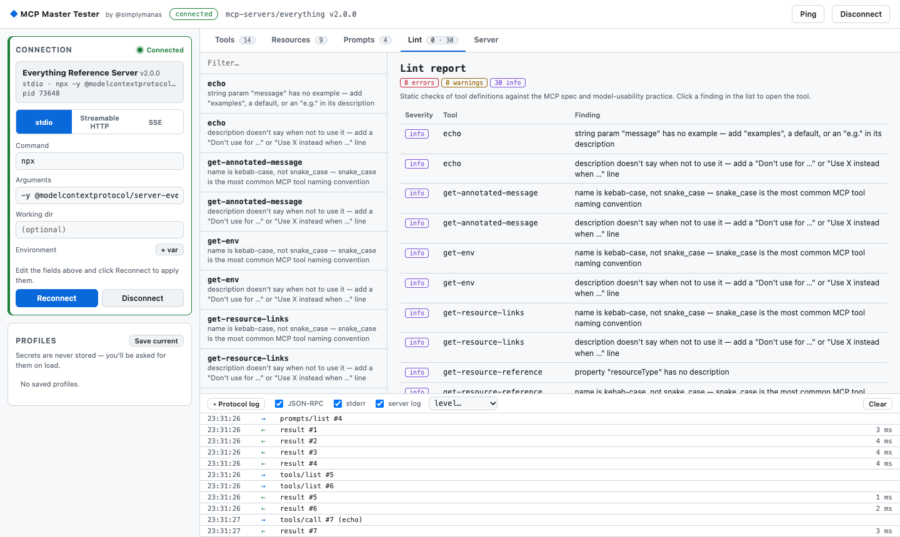
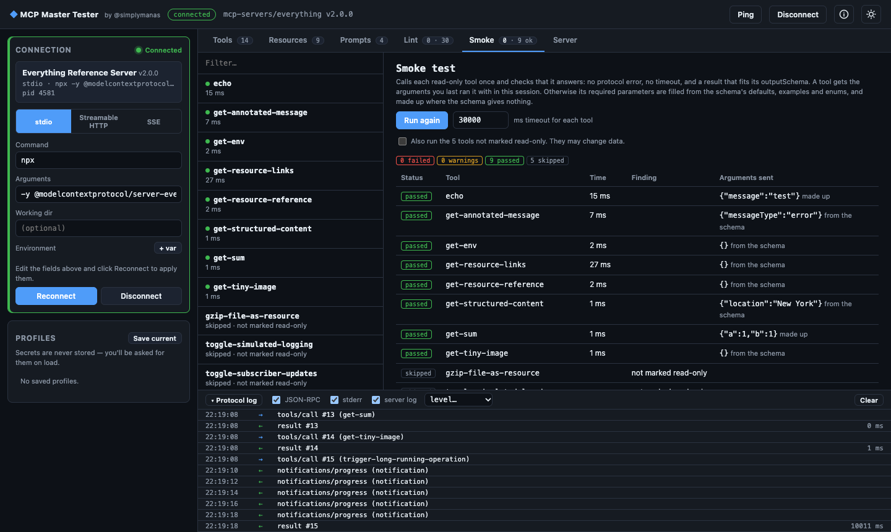

Test any MCP server
Debug any MCP server in a local web UI, then guard it in CI with lint and a smoke test. Free, open source, and it runs on your machine.
npx mcp-master-tester- stdio, Streamable HTTP and SSE
- 2 dependencies
- No build step
- MIT licence

One tool, three jobs
Point it at a server, either a local command over stdio or a remote URL. Use the web UI while you build, and the same checks from the command line in CI.
Run every tool by hand
Each tool's schema becomes a form. Call it and see the result, its structured content, and every JSON-RPC message in both directions.
Check what the model sees
Spec errors, missing descriptions, look-alike tools a model may confuse, missing safety labels, and tool lists so large they eat the context window.
Prove the tools answer
Calls each read-only tool once and fails on timeouts, crashes, protocol errors and results that break their output schema.
Forms from the schema
Strings, numbers, enums, multi-select arrays and JSON objects each get the right field, with required-field checks before anything is sent.
Results show text, images, audio and embedded resources. A tool's isError result is shown apart from a protocol error, so you can tell which one you have.

Lint that knows how models fail
Every finding links to its tool. Beyond the spec, it flags what trips models up in practice: get_user next to getUsers, a string that should be an enum, a list tool with no limit, a tool marked read-only but named cancel_booking.

A smoke test that doesn't take labels on trust
Only tools marked read-only run by default, and any whose name says they write are held back. For a server with real data, name the tools yourself with --tool.

Add it to CI in three lines
The GitHub Action runs lint and the smoke test, shows each finding as an annotation on the workflow run, and fails the job when something is wrong.
- uses: simplymanas/mcp-master-tester@v1
with:
command: node dist/index.jsWithout the action, on GitHub or any other CI system, the same checks are two commands that exit non-zero on a problem:
- run: npx -y mcp-master-tester lint --format github --fail-on warn -- node dist/index.js
- run: npx -y mcp-master-tester smoke --format github -- node dist/index.jsmcp-master-tester lint · my-server v1.4.0 · 12 tools · stdio
error send_mail required "subject" is not defined in properties
warn get_user name is very close to "getUsers" — models may confuse them; …
warn send_mail missing description — models cannot tell when to use it
✖ failed: 1 error, 2 warnings, 9 info (add --show-info to list the info findings). Failing on: error.Small on purpose
- Two runtime dependencies: the official MCP SDK and Express.
- No build step and no frontend framework. Plain JavaScript you can read.
- No install scripts, and nothing loaded from the internet: no CDN, fonts or analytics.
- A weight budget in the test suite, so a pull request that adds a dependency fails CI.
Safe to run locally
- Listens on
127.0.0.1only, and rejects other hosts and origins to block DNS rebinding. - Everything a server sends is escaped before display, backed by a Content-Security-Policy.
- Secrets stay in memory. Saved profiles keep names, never values.
- Tools marked destructive ask before they run.
Learn more
Testing any MCP server, step by step
A walkthrough on Medium.
VideoThe complete setup guide
An illustrated overview on YouTube.
SurveyHow much context do popular MCP servers use?
28 servers, 335 tools, measured.
Building MCP servers or found a bug? Open an issue, or see how to contribute. First-time contributors are welcome.